Evolucionando la Prusa 2

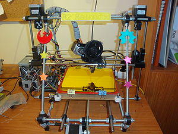
Contenido
[ocultar]Introducción
Segunda temporada de los tutoriales de montaje de una Prusa i2. En ellos partiremos de la prusa i2 ya montada y mejoraremos algunas cosas.
| PLAYLIST con todos los vídeos de la segunda temporada |
|---|
La Prusa contraataca
| Video Tutorial (1/10) |
|---|
- Descripción: Presentación de la nueva "temporada" del tutorial de la prusa :-) Iremos actualizando y mejorando nuestra Prusa, comentando los últimos avances en el mundo reprap y aprendiendo cosas nuevas.
- Material necesario: Tu Prusa :-)
Bloque I: Mejorando la base y el eje Y
Plástico ABS
| Video Tutorial (2/10) |
|---|
| 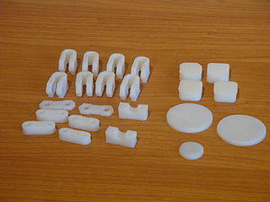 Piezas impresas en R2-Reloaded (Click para ampliar) |
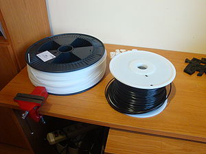 Dos bobinas de plástico ABS de 2.3Kg. En la izquierda la de German Reprap fundation. En la derecha una bobina de reprapworld (Click para ampliar) |
| 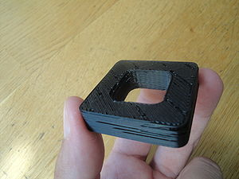 Pieza impresa con plástico ABS de RRW a 225 grados (Click para ampliar) |
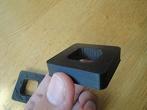 Pieza impresa con plástico ABS de RRW a 240 grados (Click para ampliar) |


- Descripción: El plástico ABS influye bastante en la calidad de las piezas. Los plásticos de fabricantes diferentes son distintos y parámetros tales como el diámetro, el punto de fusión, la consistencia... varían ligeramente de unos a otros. Algunos plásticos hay que extruirlos a mayor temperatura. Es lo que me ha pasado a mí con el ABS negro de 3mm de reprapworld. A 225 grados ofrecía mucha resistencia al extrusor y cada poco tiempo dejada de extruir a intervalor muy cortos. Al subir a 240, el plástico se hace más líquido y fluye mejor. En mi caso ha sido un factor clave para aumentar la calidad drásticamente.
- En este Fotos en G+ se puede ver maś fotos de las pruebas que hice.
- La temperatura es un paráemtro más que tendréis que probar, pero ¡Cuidado!:
- ¡NO ES MANO DE SANTO!. Puede que os mejore la calidad (como fue mi caso), pero puede que no. Si yo hago lo mismo con el plástico de German Reprap Fundation la calidad no mejora, sino que empeora porque al ser más líquido no se deposita tan bien. Es un párametro más con el que tenéis que jugar.
- NO SUBAIS DE 240 GRADOS. Depende del hot-end que tengais puede ser peligroso subir de 240 grados. Los hot-ends tienen piezas no metálicas para aislar térmicamente. Aguantan más de 240 grados, pero se pude reblandecer y con la presión del plástico deformarse, obstruyéndose. También el ABS se puede "carbonizar", dejando de ser plástico y convirtiéndose en cristales que obstruyen la aguja.
Por último, los proveedores venden el plástico en bobinas de diferentes diámetros. En la foto os he puesto las bobinas de RRW y GRRF para comparar. Sitios donde he comprado plástico:
- German Reprap fundation (Alemania)
- Reprapsource (Alemania)
- reprapworld (Holanda)
- Makerbot (USA)
- Printrbot (USA)
El precio del ABS depende de dónde lo compres... pero para que os hagáis una idea, los últimos 7Kg (3 bobinas de 2.3) los he comprado en Reprapsource. El coste total (incluido gastos de envío) ha sido de 193€, por lo que el kilo me ha salido a unos 28€.
Mejorando la base y el eje Y
| Video Tutorial (3/10) |
|---|
| 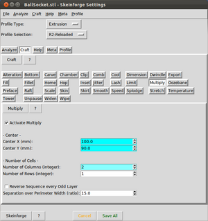 Configurando el skeinforge para imprimir objetos duplicados. Pestaña Multiply. Número de columnas=2 (Click para ampliar) |
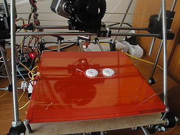 Dos ruedecillas impresas a la vez (Click para ampliar) |
| 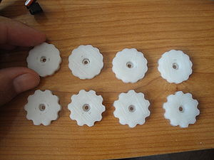 Las 8 ruedecillas impresas (Click para ampliar) |
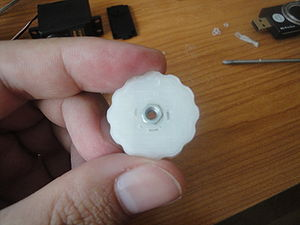 Empotrando una tuerca M3 en la pieza (Click para ampliar) |
| 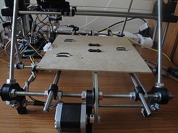 Quitar la base caliente (Click para ampliar) |
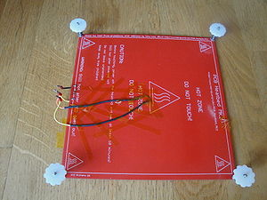 Colocar 4 ruedas en los tornillos M3 (sustituyendo a las tuercas que había antes) (Click para ampliar) |
| 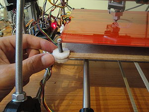 Colocar la base y poner las otras 4 ruedecillas por debajo de la base de madera (Click para ampliar) |
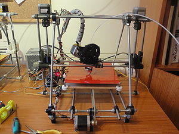 ¡Nuestra Prusa está lista! (Click para ampliar) |


- Descripción: Vamos a colocar 8 ruedecillas con tuerca en los tornillos de soporte de la base para nivelarla más fácilmente. También desplazaremos el eje Y hacia la derecha unos centímetros para que la punta del extrusor quede más centrada sobre la base caliente y que el origen de coordenadas quede lo más cercano a la esquina frontal izquierda.
- Material necesario:
- 8 tuercas M8
- Piezas imprimibles: ruedecillas x 8
- Pasos a realizar:
- Configurar el skeinforge para imprimir las ruedas de 2 en dos (inicialmente, para probar)
- Ir a la pestaña Multiply
- En la opción "Number of columns" poner 2
- Grabar (Save ALL)
- Abrir el STL de la pieza: Thumb-wheel-M3.stl
- Comprobar que al finalizar el laminado efectivamente vemos las secciones de las 2 ruedecillas
- Imprimir!
- Empotrar las tuercas M3, usando el soldador o acetona (ver tutorial: Empotrando tuercas)
- Poner la rueda en un tornillo M3 y comprobar que gira muy fácilmente (sin hacer apenas fuerza)
- Repetir con el resto de ruedas hasta completar las 8
- Quitar la base caliente
- Colocar 4 ruedecillas en los soportes de la base
- Antes de continuar... y aprovechando que tenemos la base quitada... Mover el eje y unos centímetro a la derecha (opcional) hasta que el extrusor cuando se mueve a su extremo izquierdo se quede lo más pegado posible al borde izquierdo de la base caliente.
- Mover el soporte del final de carrera X si fuera necesario
- Para moverlo hay que aflojar las tuercas M8 delanteras y traseras. Se puede mover todo sin tener que quitar la correa
- Una vez en la posición final, apretar las tuercas delanteras.
- Con un calibre asegurarse de que las distancias entre los elementos de la parte delantera son iguales a los de la trasera, para que todo quede paralelo.
- Mover el soporte del final de carrera del eje y para aumentar el recorrido y que la punta del extrusor quede en el borde delantero cuando la base se lleva totalmente hacia atrás
- colocar la base caliente
- Poner 4 ruedecillas en la parte inferior para apretar la base
- Nivelar!!!!
Regulador de altura para el eje z
| Video Tutorial (4/10) |
|---|
| 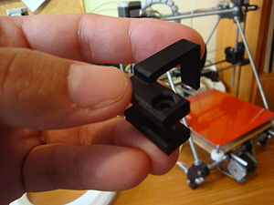 La pieza para regular la altura z (Click para ampliar) |
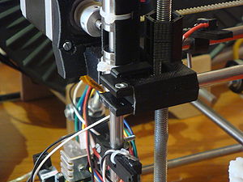 El regulador de altura con la tuerca M3 empotrada. Está fijado a la pieza del eje x que tiene el motor, mediante acetona (Click para ampliar) |
| 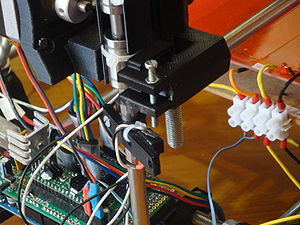 Pieza con el tornillo M3x30 colocado (Click para ampliar) |
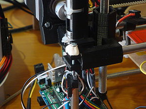 Añadir un poquito de plastilina para absorber las vibraciones y evitar así que el tornillo se mueva por sí mismo (Click para ampliar) |


- Descripción: Vamos a colocar una pieza nuevo: El regulador de altura para el eje z. Esta pieza nos va a permiter regular la altura inicial de la primera capa muy fácilmente. Sólo hay que mover un tornillo para aumentarla o disminuirla, sin tener que tocar el soporte del final de carrera (como estábamos haciendo ahora).
- Material necesario:
- Pieza imprimible: Regulador de altura z
- Un tornillo M3x30
- Una tuerca M3
- Pasos a realizar:
- Imprimir el regulador de altura
- Empotrar la tuerca M3
- Pegar el regulador de altura con acetona o superglue a la pieza del extremo del eje x (donde está el motor)
- Colocar el tornillo M3x30, de forma que sobresalga la misma distancia por arriba y por abajo
- Hacer un ajuste "gordo" de la altura moviendo el final de carrera, dejando la aguja a unos 2 ó 3 mm de la base
- Hacer ahora el ajuste "fino": Aflojar el tornillo poco a poco. Hacer "homming" del eje Z, y comprobar si se queda a la altura correcta. Si no es así, mover el tornillo y repetir.
- Finalmente colocar un pegotito de plastilina en la parte superior del tornillo para que se absorban las vibraciones y que el tornillo no se pueda mover por sí mismo, evitando que se descalibre con el tiempo.
Colocando un espejo/cristal sobre la base
| Video Tutorial (5/10) |
|---|
| 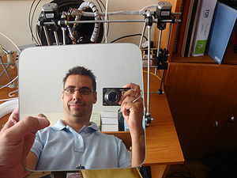 El espejo de IKEA usado como base (Click para ampliar) |
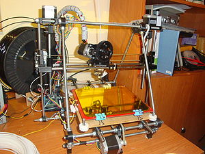 El espejo con cinta kapton por encima y colocado en R2-Reloaded (Click para ampliar) |


- Descripción: En las repraps se suele colocar como base un cristal de 20x20cm (y 3 ó 4 mm de altura) o un espejo. Son muy buenos porque son totalmente planos y no se comban. La primera capa de las impresiones queda muy bien. Permite que se puedan imprimir objetos muy grandes o muchos pequeños distribuidos por toda la base. El cristal se puede bien cortar a medida, o bien comprar un pack en IKEA
- Material necesario:
- Un Espejo de IKEA
- Cinta kaptom, de 2cm, 10cm ó 20cm
- 4 pinzas de papelería
- Pasos a realizar
- Colocar cinta kapton cubriendo todo el espejo
- limpiar la superficie con acetona
- Colocar el espejo sobre la base usando 4 pinzas (de papelería)
- Ajustar el final de carrera del eje z (ajuste "gordo" moviendo el final de carrera y ajuste fino con el tornillo del regulador de altura)
- Hacer una impresión de prueba
Bloque II: Imprimiendo, decorando y actualizando
Decorando nuestra Prusa
| Video Tutorial (6/10) |
|---|
| 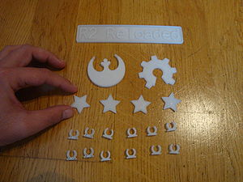 Los decoradores a usar, impresos en blanco: Logo de la alianza rebelde, placa identificativa de R2-Reloaded, logo de open hardware, estrellitas y los ganchos para colocarlos (Click para ampliar) |
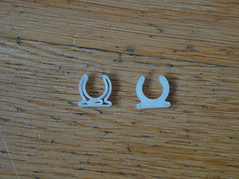 Dos ganchos impresos con diferentes parámetros. El de la izquierda está impreso con los parámetros por defecto (usados en los tutoriales anteriores). El de la derecha tiene los parámetros Extra Shell a 0 (Click para ampliar) |
| 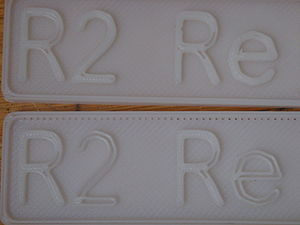 Detalle de las letras del identificador. Arriba con el parámetro Extra Shell a 0. Abajo con el perfil por defecto (Click para ampliar) |
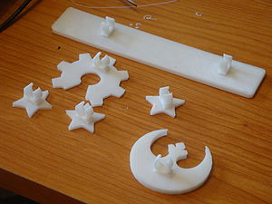 Los decoradores con los ganchos pegados (con acetona) (Click para ampliar) |
| 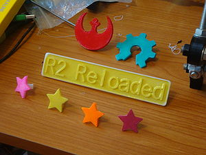 Los decoradores pintados con pintauñas (Click para ampliar) |


- Descripción: Vamos a decorar nuestra Prusa. Una forma de hacerlo es imprimir los elementos decorativos que queremos: logos, estrellas, letras, números, placas intificativas, etc... Se colocan fácilmente en las varillas roscadas de la Prusa mediante unos ganchos. Si se han impreso en ABS, se pintan muy fácilmente con pintauñas.
- Material necesario:
- Imprimir (o diseñar) los decoradores que se quieran:
- Placa de identificación clonewars. Editar el fichero de openscad para poner el nombre de tu impresora
- Ganchos y decoradores
- Acetona
- Pintauñas de colores
- Imprimir (o diseñar) los decoradores que se quieran:
- Pasos a realizar:
- Diseña y/o busca los decoradores que quieras poner. Te sugiero que empieces por La placa de indentificación. Así en las fotos sabremos qué impresora es la tuya :-)
- Bájate el STL de los ganchos.
- Imprime los ganchos. Hay que modificar algunos parámetros de skeinforge:
- Arranca el pronterface
- Abre el skeinforge
- Selecciona el perfil "R2-Reloaded"
- Ve a la pestaña FILL
- Pon los siguientes parámetros a 0:
- Extra shells on alternating solid layers (layers)
- Extra Shells on base (layers)
- Extra Shells on sparse layers (layers)
- Pega los ganchos a los decoradores usando ACETONA
- Pinta los decoradores con pintauñas
- Coloca los decoradores en las varillas roscadas de tu Prusa
Actualizando el firmware: Sprinter 1.3.22
| Video Tutorial (7/10) |
|---|
| 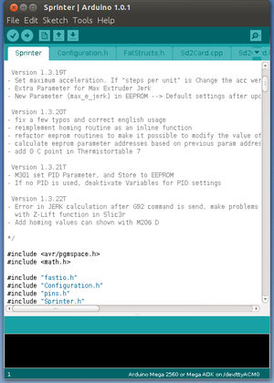 Sprinter 1.3.22 abierto en el entorno de Arduino 1.0.1 (Click para ampliar) |
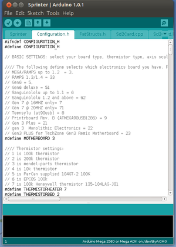 Sprinter 1.3.22 abierto con Arudiono 1.0.1. Pestaña de configuración, donde se configura el Sprinter (Click para ampliar) |
| 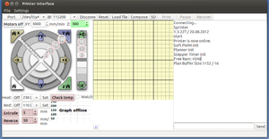 Conectándose al Sprinter 1.3.22 (Click para ampliar) |
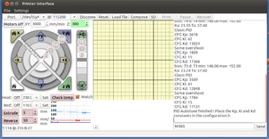 Auto-ajuste del PID completado! (Click para ampliar) |
| 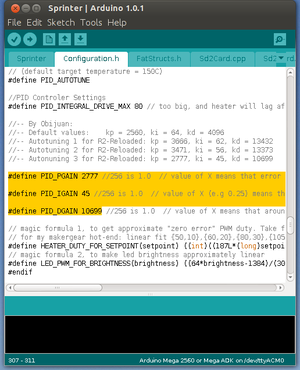 Modificando las constantes del PID en el Sprinter (Click para ampliar) |
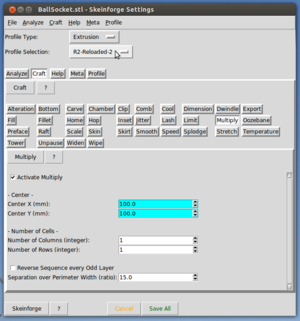 Seleccionar el nuevo perfil R2-Reloaded-2 al laminar con Skeinforge (Click para ampliar) |
| 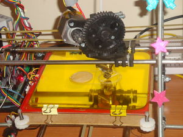 Imprimiendo dos fichas de casino para probar el nuevo Sprinter!! (Click para ampliar) |
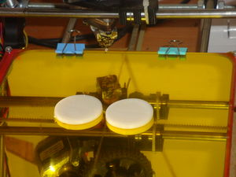 Las dos fichas de casino impresas. ¡¡Nos funciona correctamente!! (Click para ampliar) |


- Descripción: Actualizaremos el Firmware, pasando del Sprinter Super-estable al Sprinter 1.3.22. Las ventajas del nuevo firmware son:
- Se puede descargar con Arduino 1.0 (o superior)
- Homming mejorado
- Aceleraciones. Los movimientos son mucho más suaves
- Auto-cálculo de las constantes del PID del extrusor (comando M303)
- Material necesario:
- El nuevo firmware, configurado para R2-Reloaded: R2R-Sprinter-1.3.22T-Nov-2012.zip
- El nuevo perfil de R2-Reloaded, configurado para este sprinter: R2R-profiles-v2-skeinforge50.zip
- (opcional) El Pronterface actualizado, con el skeinforge 50 y los nuevos perfiles: Printrun-2012-11-02-SF50-R2Reloaded.zip
- Pasos a realizar:
- Descargar el Sprinter 1.3.22 configurado para R2Reloaded: R2R-Sprinter-1.3.22T-Nov-2012.zip
- Descomprimirlo
- Arrancar el entorno de Arduino 1.0 (ó superior)
- Abrir el fichero Sprinter.ino
- Ir a la pestaña "configuration.h"
- Configurar el Sprinter para vuestra impresora: establecer la electrónica, los tipos de termistores y los pasos por mm (esto lo tomáis de vuestra configuración del sprinter superestable, si ya lo teniais funcionando)
- Seleccionar la placa donde vais a descargar el Sprinter. Seleccionar el puerto serie
- Descargar!! Al cabo de unos segundos ya habrá finalizado
- Una vez actualizado al nuevo sprinter, arrancar el pronterface
- Configurar la velocidad a 115200 baudios, seleccionar el puerto correcto y pulsar en Connect. Aparecerá el siguiente mensaje:
Connecting... Sprinter 1.3.22T / 20.08.2012 start Printer is now online. Soft PWM Init Planner Init Stepper Timer init Free Ram: 4346 Plan Buffer Size:1152 / 16
- Vamos a calcular los parámetros del controlador PID del extrusor. Escribir el comando "M303" y pulsar Send. Aparecerá este mensaje en la consola:
SENDING:M303 PID Autotune start
- Empezará a calentarse el extrusor hasta alcanzar 150 grados y empezarán los cálculos. Esto lleva un tiempo.
- Apretar el botón de "Watch" para visualizar la temperatura
- El proceso terminará al cabo de unos 8 minutos aproximadamente. Sabremos que ha terminado cuando aparezca el mensaje:
PID Autotune finished! Place the Kp, Ki and Kd constants in the configuration.h
- Los valores que utilizaremos son los que aparecen donde pone:
Clasic PID CFG Kp: 3569 CFG Ki: 61 CFG Kd: 12848
- Ir al Sprinter en Arduino, a la pestaña "configuracion" (donde estábamos antes)
- Bajar hasta encontrar donde están definidas las constantes PID_PGAIN, PID_IGAIN, PID_DGAIN y poner los valores anteriores: kp, ki y kd:
#define PID_PGAIN 3569 #define PID_IGAIN 61 #define PID_DGAIN 12848
- Verificar y descargar el nuevo firmware
- Repetir todo este proceso 3 ó más veces, para garantizar que se encuentran unos valores lo más ajustado posibles
- Descargar el nuevo perfile de R2-Reloaded para Skeinforge 50: R2R-profiles-v2-skeinforge50.zip
- Descomprimirlo
- Copiar la carpeta profiles/extrusion/R2-RELOADED-2 en el directorio donde está instalado el Printrun/skeinforge/skeinfoge_application/profiles/extrusion
- En el pronterface abrir el laminador
- Seleccionar en el "profile Selecction": R2-RELOADED-2
- Vamos a hacer una prueba imprimiendo dos fichas de casino. Ir a la pestaña de Multiply y en Number of columns poner 2
- Grabar y salir
- Abrir el fichero con la ficha de casino (casino_chip.stl) para laminar
- Calentar el extrusor y las bases, como siempre. Darle a print!!!

Actualizando el pronterface
| Video Tutorial (8/10) |
|---|
| 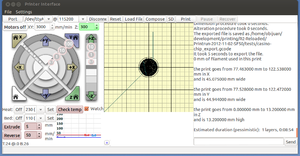 Moneda de casino cargada en el pronterface (Click para ampliar) |
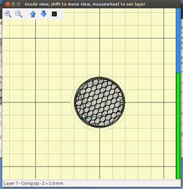 Viendo las capas de la moneda (Click para ampliar) |
| 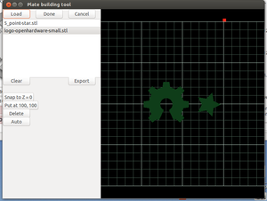 Haciendo una composición de piezas, con la opción "compose" de pronterface (Click para ampliar) |
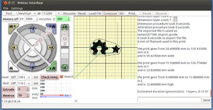 Laminado de la composición: logo de hardware libre y estrellita (Click para ampliar) |


- Descripción: Actualizaremos el pronterface a una versión más moderna. En realidad los cambios no son muchos. El nuevo pronterface es casi igual al antiguo. Pero ya que hemos actualizado el Sprinter, aprovechamos para actualizarnos también el pronterface.
- Material necesario:
- Paquete con el pronterface + skeinforge 50 + perfiles, para Linux: Printrun-2012-11-02-SF50-R2Reloaded.zip
- Pasos a realizar:
- Descargar el paquete con el pronterface + skeinforge 50 + perfiles, para Linux: Printrun-2012-11-02-SF50-R2Reloaded.zip
- Decomprimirlo
- Ejecutar el nuevo pronterface
- Abrir una ficha de casino para comprobar que lamina bien
- Probar el "Composer", para asegurarse que todo funciona bien.
Pronterface en 3D
| Video Tutorial (9/10) |
|---|
| 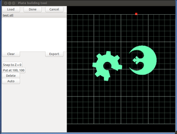 El "compose" de pronterface, con dos piezas cargadas (Click para ampliar) |
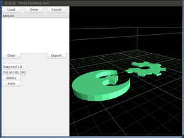 Vista 3D del compose de pronterface (Click para ampliar) |
| 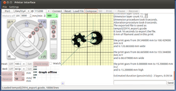 Las piezas laminadas, listas para imprimir (Click para ampliar) |


- Descripción: Con el "compose" del pronterface se pueden ver las piezas en 3D. En este tutorial se describe la manera de hacerlo. Se ha logrado gracias a la colaboración a través de la lista de Clone Wars
- Material necesario:
- El pronterface instalado
- Pasos a realizar:
- Abrirl el pronterface
- Abrir el compose: Pinchar en el botón "compose"
- Cargar las piezas STL: para ello pinchar en Load
- Movimiento de las piezas:
- Seleccionar la pieza pinchando en su nombre
- Apretar el botón izquierdo del ratón para desplazarla
- Con la rueda del ratón la rotamos alrededor del eje z
- Movimiento de la cámara (Vistas 3D)
- Shift + botón izquierdo: cambiar la vista 3D
- shift + botón derecho: Desplazamiento de la cámara
- shift + rueda ratón: Zoom
- Créditos:
- Daniel Mercado: Descubrimiento de las capacidades 3D de pronterface (shitf + botón izquierdo). Abrió un hilo en la lista para compartirlo
- Julian García: Descubridor de lal Zoom
- Xoan Sampaiño: Descubridor del desplazamiento de la cámara
Mejorando la adhesión del ABS a la base
| Video Tutorial (10/10) |
|---|
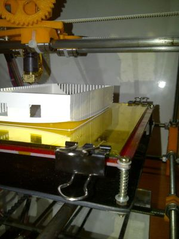 Pieza en ABS con las esquinas levantadas. Foto cortesía de Daniel Mercado (Click para ampliar) |
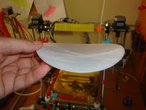 Oblea de ABS que se ha curvado. (Click para ampliar) |
| 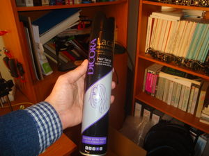 Método 1 para mejorar la adherencia: Usar laca para el pelo (Click para ampliar) |
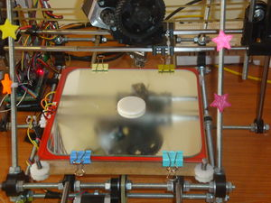 Ficha de casino impresa directamente sobre el espejo, sin cinta kapton y rociado de laca (Click para ampliar) |
| 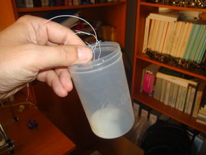 Preparando las "pasta de ABS". Verter un poco de acetona y añadir hilos de ABS sobrantes de las impresiones (Click para ampliar) |
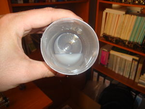 Aspecto de la mezcla final. Está bastante diluida (Click para ampliar) |
| 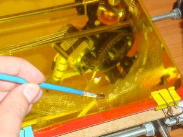 Aplicando la pasta de ABS en la base, con un pincel, sobre la parte donde se imprimirá el anillo de prueba (Click para ampliar) |
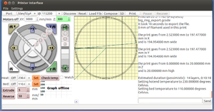 El anillo de pruebas laminado (desactivando la opción fill) (Click para ampliar) |
| 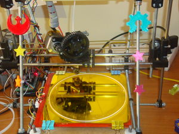 Imprimiendo el anillo de pruebas, de 19cm de diámetro y 1cm de altura (Click para ampliar) |
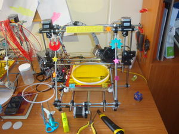 Anillo terminado. No se ha despegado nada, a pesar de estar pegado a los bordes(Click para ampliar) |
| 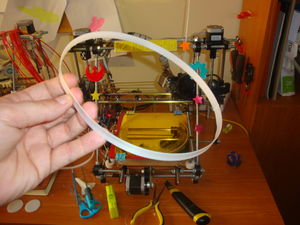 El anillo de pruebas (Click para ampliar) |


- Descripción: Uno de los problemas al imprimir con ABS es el de la adherencia a la base. Si la pieza no se adhiere bien, las esquinas se curvan debido a la contracción que sufre el ABS al enfriarse. La manera de conseguir buena adherencia es mantener una temperatura entre 110 y 120 grados... pero esto a veces no es posible, sobre todo en piezas grandes que están cerca de los extremos de la base. Hay dos trucos para solucionar esto: utilizar Laca o pasta de ABS.
- Material necesario:
- Un bote de laca para el pelo (de los que se compran en los supermercados)
- Acetona
- trocitos de ABS (sobrantes de las impresiones)
- Un bote vacío para mezclar el ABS con la acetona
- Un pincel para aplicar la pasta de abs sobre la superficie de la base
- Este anillo de prueba, de 19cm de diámetro y 1cm de altura, para comprobar la adherencia: (STL) (Openscad)
- Pasos a realizar:
- Método de la laca: Es muy sencillo:
- Tomar el bote de laca y pulverizar la superficie de la base (con o sin Kapton)
- Imprimir una pieza de prueba
- Método de la pasta de ABS:
- Poner un poco de acetona en un recipiente (que se pueda cerrar, para que no se evapore)
- Añadir trozos de ABS sobrantes de otra impresoras. A ser posible hilitos, para que se disuelvan antes
- Remover y dejar que el ABS se diluya durante 15 - 20 minutos
- Utilizar un pincel para dar una capa sobre la superficie de la base
- Imprimir la pieza
- Prueba extrema: Descargar el anillo de 19cm de diámetro y 1cm de altura: (STL)
- Desactivar la opción de "FILL" en el skeinforge
- Laminar e imprimir
- Método de la laca: Es muy sencillo:
Autor
- Juan González Gómez (Obijuan)
Licencia
| |
Créditos
Para este tutorial se ha utilizado muchísima información de la lista de clone wars, así que los créditos van para todos sus integrantes. En especial, he utilizado explicitamente ideas de:
- Fernando Salceda (Klonando)
- Carlos García (Clones Halcon Milenario y Lucy)
- Diego Lao
- Nicuma (Nieves cubo)
- Marcos Castillo (Moz)
- Daniel Mercado
Noticias
- 07/Sep/2012: Comenzada esta página
|
|
Proyecto Clone wars: Construye tu impresora 3D opensource! |
 |
Proyecto RepRap: Impresoras 3D auto-replicantes. El origen de la revolución de las impresoras 3D opensource |
|
|
Obijuan Academy, Tu academia rebelde! ;-) |